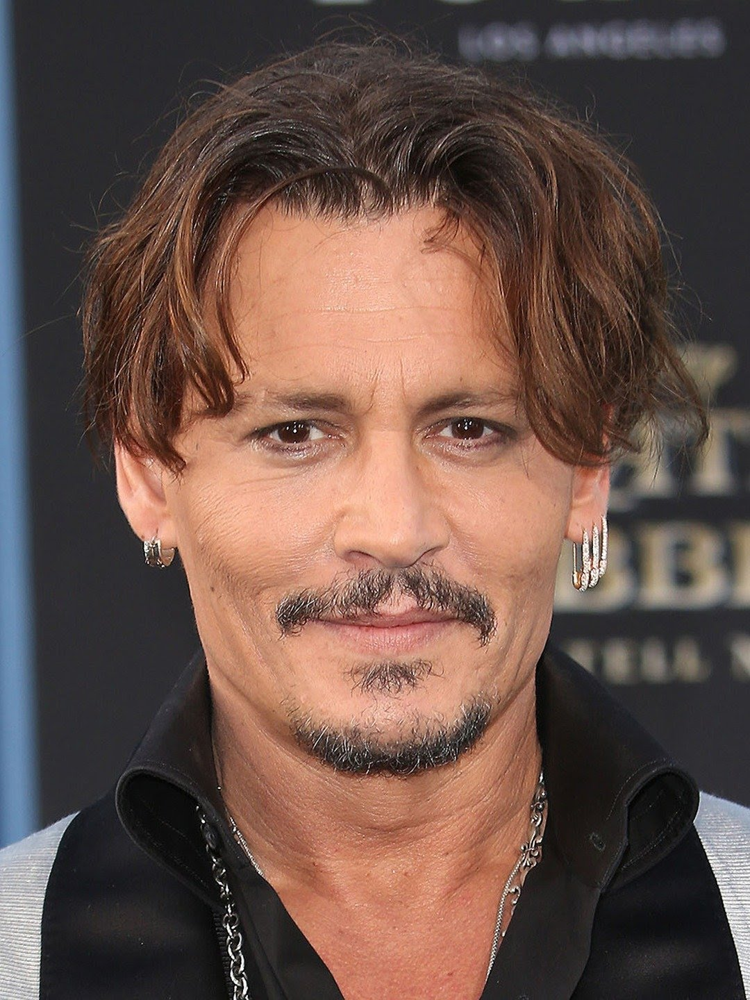
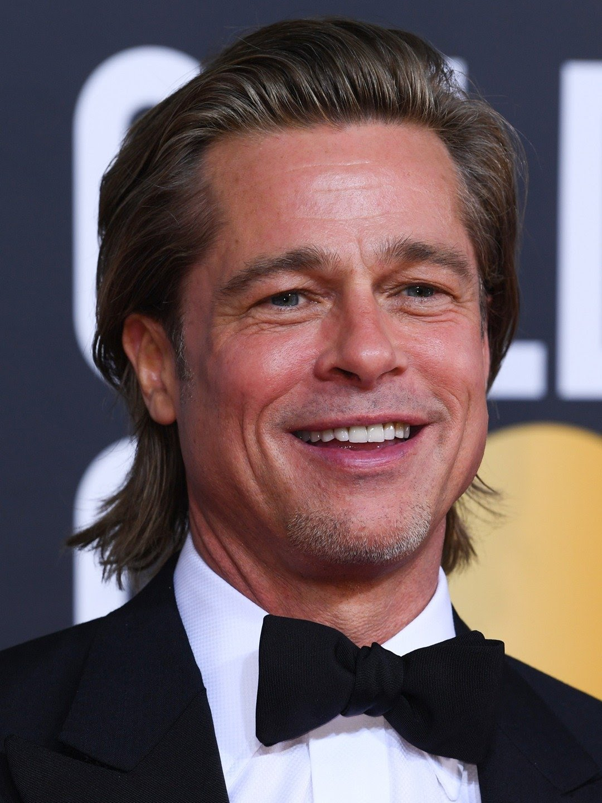
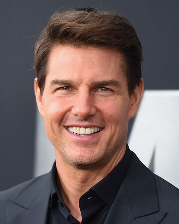

The Best Actors In The World
1. Johnny Depp

American actor John Christopher Depp II is an American actor, producer
and musician. He has been nominated for ten Golden Globe Awards, winning
one for Best Actor for Sweeney Todd: The Demon Barber of fleet Street
and has been nominated for three Academy Awards for Best Actor, among
other accolades. Wikipedia Born: June 9, 1963 (age 58 years), Owensboro,
Kentucky, United States Height: 1.78 m Spouse: Amber Heard (m.
2015-2017), Lori Anne Allison (m.1983-1986) Children: Lily-Rose Depp
Uncoming movie: Fantastic Beasts an Where to Find Them 3
Social Media
 Instagram
Instagram
 Facebook
Main menu
Facebook
Main menu
2. Bradd Pitt

American actor William Bradley Pitt is an American actor and film
producer. He has received multiple awards, including two Golden Globe
Awards and an Academy Awards for his acting, in addition to another
Academy Award, ...Wikipedia Born: December 18, 1963 (age 57 years),
Shawnee, Oklahoma, United States Height: 1.8 m Children: Shiloh
Jolie-Pitt, Maddox Chivan Jolie-Pitt, MORE Spouse: Angelina Jolie (m.
2014-2019), Jennifer Aniston (m. 2000-2005)
Social Media
Instagram
Facebook
Main menu
3. Dwayne Johnson

Dwayne Douglas Johnson, also known by ring name The Rock, is an American
actor, producer, retired professional wrestler, and former American
football and Canadian football player. Wikipedia Born: May 2, 1972 (age
49 years), hayward, California, United States Height: 1.96 m Spouse:
Louren Hashian (m. 2019), Dany Garcia (m. 1997-2008) Children: Simone
Alexandra Johnson, Jasmine Johnson, Tiana Gia Johnson TV shows: Young
Rock, WWE Friday Night Smackdown!, MORE
Social Media
Instagram
Facebook
Main menu
4. Tom Cruise

Thomas Cruise Mapother IV is an American actor and producer. He has
received various accolades for his work, including three Golden Globe
Awards and three nominations for Academy Awards. He is one of the
highest-paid actors in the world. Wikipedia Born: July 3, 1962 (age 58
years), Syracuse, New York, United States Height: 1.7 m Spouse: Katie
Holmes (m. 2006-2012), Nicole Kidman (m. 1990-2001), Mimi Rogers (m.
1987-1990) Children: Suri Cruise, Connor Cruise, Isabella Jane Cruise
Social Media
Instagram
Facebook
Main menu
 Main menu
Main menu